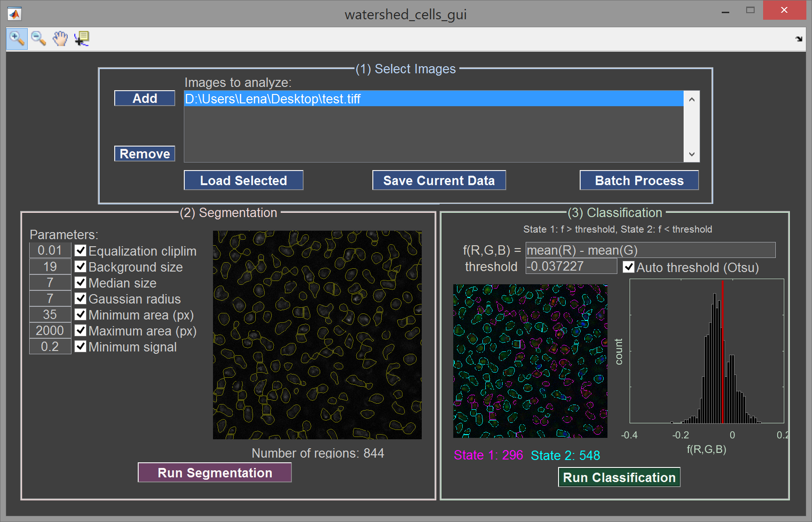

Watershed cells | MATLAB-based GUI
As part of my thesis research, I wrote this MATLAB-based GUI to locate, quantify, and classify cells in 2D confocal fluorescence images. This GUI uses a variation of the watershed transform to locate objects and then analyzes the fluorescence intensity to classify them. For more inforamtion, see the code and README on github: github.com/itaicohengroup/watershed_cells_gui.
